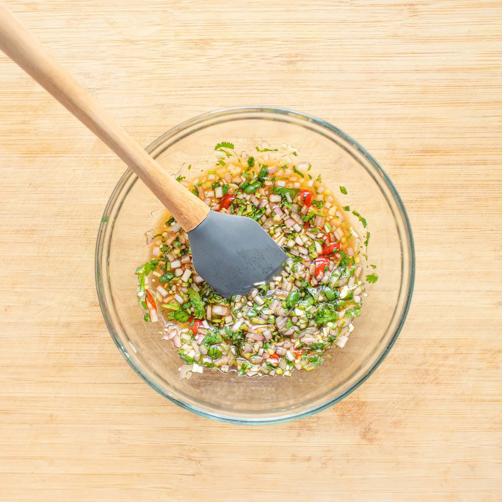

Crack Sauce
Description
Try this amazing umami-packed Asian sauce. It’s a sweet and spicy sauce made from a combination of fish sauce, sugar, lime juice, shallots, garlic, cilantro, and chili peppers.
Ingredients
- 2 tbsp fish sauce
- 1 tbsp lime juice
- 1 tbsp sugar (or to taste)
- 1 small shallot, finely minced
- 1 small garlic clove, minced
- 1-2 Thai bird’s eye chilis (or to taste), finely chopped
- 2 tbsp fresh cilantro, chopped
- 1 tbsp water (optional, to thin out the sauce)
Instructions
- In a small bowl, combine the fish sauce, lime juice, and sugar. Stir until the sugar dissolves completely
- Add the minced shallot, garlic, and chilis to the mixture. Stir to combine
- Add cilantro and mix everything together.
- Taste and adjust with more lime juice, sugar, or fish sauce as desired.
- If you prefer a thinner sauce, add a little water to reach your desired consistency.